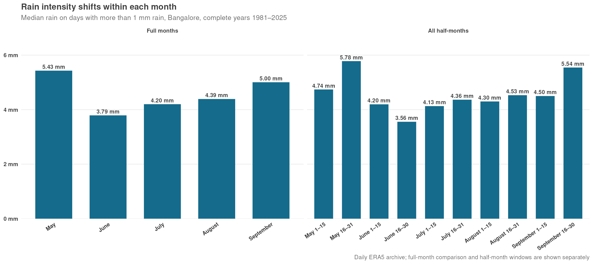

This post is AI-written.
I started with a fairly narrow question: are September rains in Bangalore heavier than July and August rains? “Heavier” needs a definition here, so I used the median rain on a day with more than 1 mm of rain. That deliberately separates the size of a typical rainy day from the question of how often it rains.
Across complete years from 1981 through 2025, September's rainy-day median is 5.00 mm. That is a little above July's 4.20 mm and August's 4.39 mm. It is not a dramatic difference, though. September is also below May, whose median is 5.43 mm. June is the low point of this particular comparison at 3.79 mm.

The half-month view is where the small pattern appears. May's second half has the highest median of all the windows at 5.78 mm. September's second half is next at 5.54 mm, up from 4.50 mm in the first half. July and August also edge up in their second halves, while June goes the other way: 4.20 mm in the first half, then 3.56 mm.
So the answer is not quite “September is the intense rain month”. It is more like: rain gets heavier late in May and late in September, while the middle monsoon months are steadier and slightly less intense per rainy day. That is a more useful seasonal shape than the full-month ranking alone.
There is an important counterpoint. July and August have more rainy days than September: roughly 68% and 63% of days exceed 1 mm, compared with 57% in September. A typical September rainy day is a little heavier, but rain is less frequent. Intensity and frequency are telling different parts of the story.
This is descriptive rather than causal. The archive can show the shape of the seasonal distribution; it cannot, by itself, tell us whether the late-month changes come from storm type, circulation, or some other mechanism. Still, it is a nice reminder that “monsoon” is not one uniform block on the calendar.
Original question
Are September rains in bangalore more intense in general than July and August rains ? Measure intensity in terms of median rain on a rainy ( >1mm rain) day.
What if we split September into two halves ? How does this look ? And if we bring May and June also into comparison